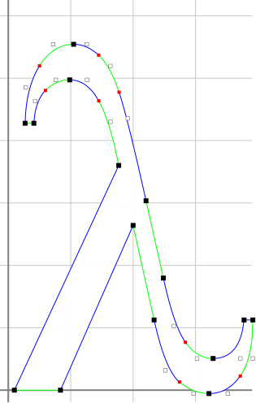

Abstract
TrueType fonts have a publicly documented file format. ZPB-TTF is a TrueType file parser that provides an interface for reading typographic metrics, glyph outlines, and other information from the file. It is available under a BSD-like license. The latest version is 1.0.2, released on November 30th, 2011.
TrueType is a registered trademark of Apple Computer, Inc.
Download shortcut: http://www.xach.com/lisp/zpb-ttf.tgz
ZPB-TTF has the following limitations:
Font files are loaded by creating font loaders. A font loader has information that applies to the font as a whole, such as its overall bounding box and other typographic metrics, the number of glyphs it contains, and a character map that can be used to convert a character set index into a glyph index meaningful to the font loader.
A font loader can also be used to create and find glyphs. A glyph object has information about an individual glyph such as typographic metrics and its outline.
Glyph outlines are made up of arrays of control points. An array of control points is called a contour. Contours define the shape of the glyph. For example, in most fonts, the glyph for the character #\I has one contour defining its outline. The glyph for the character #\O has two contours: one for the outer edge, and one for the inner edge.
This documentation is not meant to be a substitute for the TrueType
file format documentation. For file format details, see the
specifications from either Apple
or Microsoft.
Glyph Example

This image is a rendering of the Greek small letter lambda (U+03BB) from the Times New Roman TrueType font. The visualization was programmed by Frederic Jolliton and rendered with CL-VECTORS.
The dark gray grid lines represent the axes of the glyph coordinate system. Light grid lines are drawn at intervals of 256 em-square units.
Black squares represent the control points returned from CONTOUR. Solid black squares are points on the outline (ON-CURVE-P returns true), and hollow black squares are not on the outline. Solid red squares represent implicit control points on the glyph outline; they are not in the original contour, but they would be returned in a new contour created with EXPLICIT-CONTOUR-POINTS.
The alternating blue and green portions of the glyph outline
represent the separate segments whose start, control, and end points
were bound with DO-CONTOUR-SEGMENTS.
The ZPB-TTF Dictionary
[Function]
open-font-loader font-file-designator => font-loader
Creates and returns a font-loader object from font-file-designator, which should be either a pathname, pathname namestring, a stream, or a font-loader object.
[Function]
close-font-loader font-loader =>
Closes any open resources held by font-loader.
[Macro]
with-font-loader (font-loader font-loader-designator) &body body =>
Performs body with font-loader bound to a font-loader object created as if with (open-font-loader font-loader-designator). Automatically closes the font-loader when finished.
[Function]
glyph-count font-loader => number
Returns the number of glyphs available in font-loader.
[Function]
name-entry-value name-designator font-loader => string
Returns an entry from the TrueType "name" table, which contains human-readable values for copyright info, trademark notices, creator names, and the like.name-designator may be either an integer ID from the table of NameIDs in the TrueType "name" table specification, or a keyword designating such an ID. Valid keywords and their IDs are:
Keyword ID :COPYRIGHT-NOTICE 0 :FONT-FAMILY 1 :FONT-SUBFAMILY 2 :UNIQUE-SUBFAMILY 3 :FULL-NAME 4 :NAME-TABLE-VERSION 5 :POSTSCRIPT-NAME 6 :TRADEMARK-NOTICE 7 :MANUFACTURER-NAME 8 :DESIGNER 9 :DESCRIPTION 10 :VENDOR-URL 11 :DESIGNER-URL 12 :LICENSE-DESCRIPTION 13 :LICENCE-INFO-URL 14 :RESERVED 15 :PREFERRED-FAMILY 16 :PREFERRED-SUBFAMILY 17 :COMPATIBLE-FULL 18 :SAMPLE-TEXT 19 If the font does not provide any "name" table entry for the given name-designator, returns NIL.
[Function]
find-name-entry platform-id language-id name-id font-loader => name-entry
This is the low-level interface used by NAME-ENTRY-VALUE. platform-id, language-id, and name-id should be integer ID values from the TrueType "name" table specification. If the combination of IDs is found in the name table, a name-entry object is returned, otherwise NIL is returned.
[Function]
value name-entry => string
Returns the string value of a name-entry object.
[Function]
italic-angle font-loader => number
Returns the typographic italic angle of font-loader.
[Function]
underline-thickness font-loader => number
Returns the typographic underline thickness of font-loader.
[Function]
underline-position font-loader => number
Returns the typographic underline position of font-loader.
[Function]
fixed-pitch-p font-loader => boolean
Returns true if font-loader is fixed pitch (all glyphs have the same width).
[Function]
units/em font-loader => number
Return the number of units in the typographic em-square of font-loader.
[Function]
ascender font-loader => number
Returns the typographic ascender value of font-loader.
[Function]
descender font-loader => number
Returns the typographic descender value of font-loader.
[Function]
line-gap font-loader => number
Returns the typographic line gap of font-loader.
[Generic function]
postscript-name object => string
Returns the Postscript name of object, which may be a glyph or a font-loader.
[Function]
full-name font-loader => string
Returns the full name of font-loader.
[Function]
family-name font-loader => string
Returns the family name of font-loader.
[Function]
subfamily-name font-loader => string
Returns the subfamily name of font-loader.
[Function]
all-kerning-pairs font-loader => list
Returns a list of all the kerning pairs available in font-loader. Each element of the list is itself a list, with three elements: a left glyph, a right glyph, and a numeric kerning offset.
[Function]
glyph-exists-p character-designator font-loader => boolean
Returns true if font-loader has glyph data for character-designator.
[Function]
index-glyph index font-loader => glyph
Returns the glyph at index in font-loader.
[Function]
find-glyph character-designator font-loader => glyph
Returns the glyph for character-designator in font-loader. If character-designator is an integer, it is treated as a Unicode code-point and the corresponding glyph is fetched from the font. If character-designator is a character, its char-code is used as a Unicode code-point for lookup.
Note: If the char-codes of characters the Lisp implementation do not correspond to Unicode (or a subset), this may not return the expected glyph.If font-loader does not contain any glyphs for character-designator, the "missing glyph" glyph is returned. To test for the existence of a glyph without returning the "missing glyph" glyph, use GLYPH-EXISTS-P.
[Generic function]
bounding-box object => #(xmin ymin xmax ymax)
Returns the bounding box of object, which may be a glyph or a font-loader.
[Generic functions]
xmin object => value
ymin object => value
xmax object => value
ymax object => value
Returns the horizontal and vertical extreme values for object, which may be a glyph or font-loader. If object is a four-element vector, each function is an accessor to the appropriate entry in the vector.
[Function]
x control-point => number
y control-point => number
Returns the respective coordinate of control-point.
[Function]
on-curve-p control-point => boolean
Returns true if control-point is on the contour outline.
[Function]
contour-count glyph => number
Returns the number of contours of glyph. Some glyphs, such as the glyph for the Space character, may have zero contours.
[Function]
contour glyph index => vector
Returns the indexth contour from the contours of glyph. A contour is represented as a vector of control point objects. Each control point may be on (touching) or off (not touching) the the contour outline.TrueType files may store contours that have implicit control points. When two consecutive control points are off the contour outline, there is an implied control point at the midpoint between them on the contour curve.
[Function]
contours glyph => vector
Returns all contours of glyph as a vector.
[Macro]
do-contours (contour glyph &optional
result) &body body => result
Performs body for each contour in glyph, with the contour bound to contour. Returns result (evaluated) at the end of processing.
[Function]
explicit-contour-points contour => vector
Returns a vector of points that is the same as contour with the implicit contour points inserted.
[Macro]
do-contour-segments (start control end) contour &body body =>
For convenience, a TrueType contour may be thought of as being made up of connected segments. Each segment is either a straight line from one point on the outline to another, or a curved line that starts with a point on the outline, is controlled by a point off the outline, and ends with a point on the outline.DO-CONTOUR-SEGMENTS performs body for each segment of contour, with the start, control, and end variables (not evaluated) bound to the start, control, and end points of the segment. If the segment is a straight line, control is bound to NIL.
Contours of a glyph in a TrueType file may contain implied control points; two consecutive points off the outline may be treated as if there is there is an point on the outline at the midpoint between them. DO-CONTOUR-SEGMENTS synthesizes and binds any implicit points as needed when going through the contour segments. (See the Glyph Example for a visual explanation.)
Segments are not a TrueType glyph concept. The term is used for convenience by ZPB-TTF.
[Macro]
do-contour-segments* (control end) contour &body body =>
DO-CONTOUR-SEGMENTS* is like DO-CONTOUR-SEGMENTS, except it does not bind a start variable.
[Function]
code-point glyph => number
Returns the Unicode code point of a character glyph represents. Note: Since font glyphs may represent more than one character, this value may not be exactly what you expect. Note: Since glyphs in a font do not necessarily correspond to a code point, or to a single code point, this may not always return a meaningful value.
[Function]
font-index glyph => number
Returns the integer index of glyph in its font loader.
[Function]
advance-width glyph => number
Returns the typographic advance width of glyph.
[Function]
left-side-bearing glyph => number
Returns the typographic left side bearing of glyph.
[Function]
right-side-bearing glyph => number
Returns the typographic right side bearing of glyph.
[Function]
kerning-offset left-glyph right-glyph
font-loader => number
Returns the typographic kerning adjustment needed for the advance width when left-glyph and right-glyph appear next to each other.
[Function]
string-bounding-box string font-loader
&key (kerning t) =>
#(xmin ymin xmax ymax)
Returns the bounding box for string in the natural unit size of font-loader. If kerning is true, the inter-glyph spacing will take kerning offsets into account when calculating the bounding box.
Please send bug reports, patches, questions, and any other feedback to Zachary Beane.